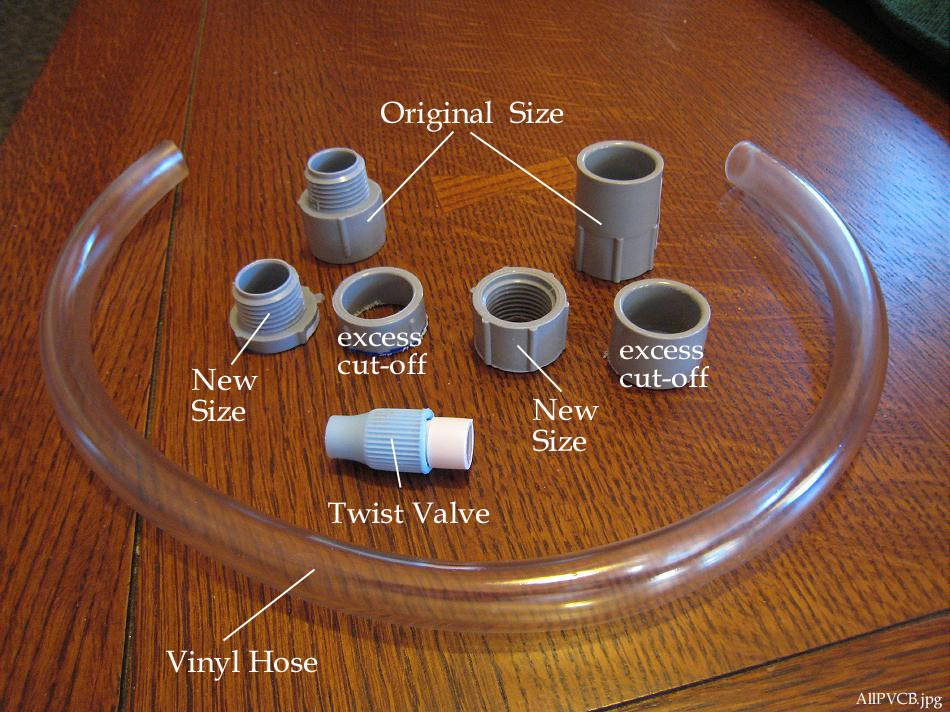

| PVC Sponsons ( page 3 of 5) | Menu Previous Page Next Page |
|

The electrical adapters (flange) are cut down in size to remove excess plastic not required for this application. The 1/2" PVC adapter and 5/8" X 1/2" vinyl(PVC) hose are available at most hardware stores. The PVC twist on / off valves come from NRS (Northwest River Supply). The adapters cost 25 cents each and the Valves cost 50 cents each.
|
|